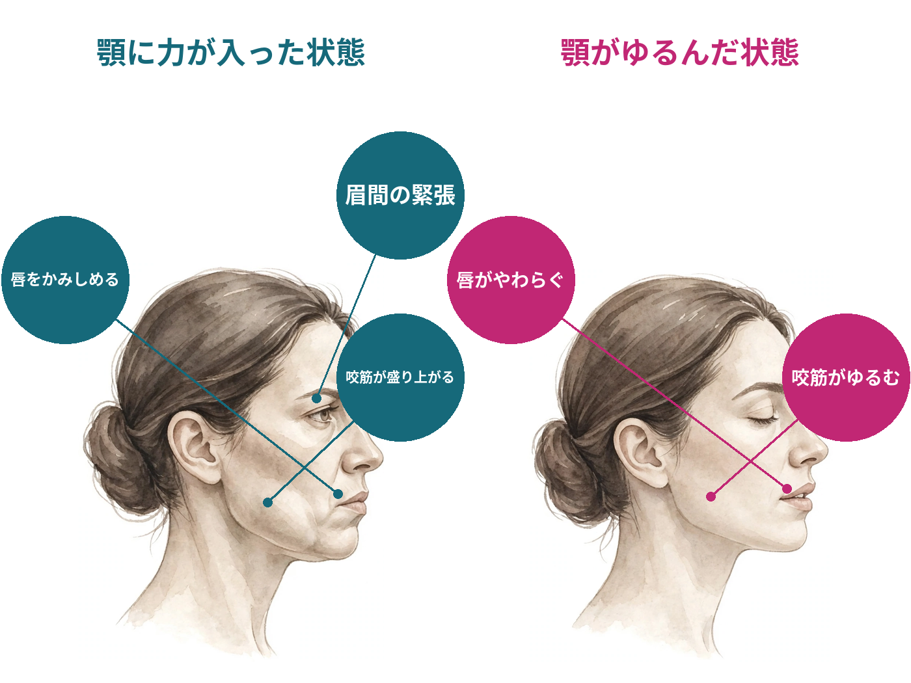

食いしばり・顎の疲れ
美容整体ステラ・ポラリス東三国｜大阪市淀川区東三国・東三国駅徒歩5分・女性向け

かみしめた顎をゆるめて、やわらかな表情へ
集中していると、つい歯をかみしめている。朝起きると顎が疲れている——食いしばりは、無意識のうちに顎に力が入り続けるクセです。顎の筋肉の緊張は、エラの張りの見え方や、首・肩のこりともつながります。自分では気づきにくいクセだからこそ、仕組みを知ることが第一歩です。このページでは、食いしばりの仕組みと、顎まわりをゆるめてやわらかな表情を目指す当サロンでのケア、ご自宅でできるセルフケアをご案内します。食いしばりは、歯ぎしりとは違い、音もなく起こるため、本人も周囲も気づきにくいクセです。顎の疲れを感じたら、まず「今、歯が触れていないか」を確かめてみてください。
ご予約はこちら（Coubic）こんなお悩みありませんか
- 集中したあと、顎が疲れていることがある
- 朝起きたとき、顎まわりが重く感じる
- エラの張りが気になって、髪型で隠したくなる
- 無意識に、上下の歯が触れていることが多い
- 首や肩のこりも、セットで気になっている
- 顎まわりを触ると、固く盛り上がっている
- 人前で緊張すると、顎に力が入る気がする
当てはまる項目が多いほど、顎の筋肉が働きっぱなしになっている目安とされています。食いしばりは、気づいて力を抜く練習から向き合えます。次のセルフチェックで、顎の筋肉の張り具合の傾向を確かめてみましょう。
簡単セルフチェック（咬筋の張りチェック）
耳の下から顎の角を触って、筋肉の張りを確かめる簡単な方法です。
- 耳の下、顎の角のあたりに指を当てます。
- 奥歯を軽くかみしめたときと、力を抜いたときの、筋肉の盛り上がりの違いを確認します。
- 力を抜いても盛り上がりが残る、左右で差が大きい場合は、顎の筋肉が緊張し続けている目安と言われています。
※これは診断ではありません。ご自身の状態の傾向を知る目安としてお使いください。
食いしばり・顎の疲れの原因と仕組み
咬筋という強い筋肉
顎を動かす咬筋は、体の中でも強い力を持つ筋肉の一つです。食事のとき以外は本来ゆるんでいるものですが、食いしばりのクセがあると、弱い力でも長時間働き続けることになります。図1のように、咬筋の盛り上がりは、エラの張りの見え方にもつながります。

図1 咬筋の緊張と顎の状態の関係、顎がゆるんだ状態のイメージ。体の状態には個人差があります。
無意識の場面で起こる理由
食いしばりは、集中しているとき、緊張しているとき、そして眠っている間に起こりやすいと言われています。本来、唇を閉じていても上下の歯の間には小さなすき間があるのが自然な状態です。そのすき間が失われている時間が長いほど、顎の負担は積み重なります。日中の食いしばりは、パソコン作業や家事など、集中する場面で起こりやすいと言われています。作業の合間に歯の位置を確認する習慣が、気づきを増やします。
首・肩への広がり
顎の筋肉は、首や肩の筋肉とも連動しています。顎の緊張が続くと、首の横や肩の上部まで張りが広がり、頭の重さにつながることもあります。顎だけを見るのではなく、首・肩と一緒にゆるめる視点が大切です。
見え方への影響
咬筋が発達して盛り上がると、顔の横幅が広く見え、エラが張った印象になります。筋肉の緊張をゆるめることは、表情のやわらかさや、フェイスラインの見え方にも関わってきます。力を抜く感覚を知ることが、ケアの土台です。
セルフケアで足りる場合・サロンケアが向く場合
顎の疲れが軽く、力を抜く意識を持つと楽に感じる日が多い場合は、まずご自宅でのセルフケアを続けて様子を見る方法があります。一方で、咬筋の盛り上がりが強く自分ではゆるめにくい、首・肩のこりも重なっている、力を抜く感覚そのものがつかみにくいという場合は、サロンでのケアが向いている目安になります。サロンでは、顎まわりから首・肩をゆるめ、施術後に「顎が軽い」「表情がやわらいだ感じがする」と感じやすい状態を目指します。なお、顎の痛みや音が気になる場合は、歯科への相談を優先してください。施術では、顎まわりのほぐし方のコツもお伝えしますので、ご自宅でのケアにも活かせます。
当サロンでのケア
当サロンの顎ケアは、「顎まわりの緊張をゆるめ、力を抜く感覚を取り戻す」ことを目指す組み立てです。まず咬筋の張り具合と首・肩の状態を一緒に確認し、部位と目的に合わせて3つの手技を組み合わせます。
美容整体：頭の位置と姿勢の軸を整え、顎や首にかかる負担の土台から見直すことを目的に。姿勢と顎のつながりも整えます。
アロマオイルマッサージ：首すじから肩、デコルテをオイルでゆるめ、顎まわりまで巡りが流れやすい状態を目指します。
もみほぐし：咬筋や首の横、肩の上部を丁寧にほぐし、顎の力みが抜けていく感覚を目指して進めます。顎まわりはやさしい圧で進めます。
ケアを通して目指すのは、こんな変化です。
- 顎まわりの緊張がゆるみ、力を抜きやすい感覚へ
- 咬筋の盛り上がりがやわらいで、表情がやわらかな印象へ
- 首・肩までゆるんで、頭が軽く感じる状態へ
- 上下の歯のすき間を保つ感覚を知り、日常でも意識しやすい状態へ
- フェイスラインがすっきり見える、土台づくりへ
施術の仕上げには、顎の力を抜く意識の持ち方や、首まわりのほぐし方もお伝えします。食いしばりは「気づく→抜く」の繰り返しで向き合うクセです。感覚を知ることが、その練習の助けになります。顎の力を抜く練習は、場所を選ばずいつでもできます。小さな気づきの積み重ねがクセをほどきます。

施術の流れ
ご来店後、気になる部位やお悩み、ご希望の強さなどをうかがいます。完全個室のため、周りを気にせずお話しいただけます。
咬筋の張り具合や首・肩の状態、姿勢のクセなどを一緒に確認し、その日の状態に合わせた施術の進め方をご案内します。
美容整体を中心に、ご希望に応じてアロマオイルマッサージ、もみほぐしを組み合わせて進めます。強さは途中でも調整できます。
施術後の状態を確認し、ご自宅で続けやすいセルフケアのポイントをお伝えします。次回の目安についても、ご希望があればご案内します。
料金
| コース | 通常価格 | キャンペーン価格（12/25まで） |
|---|---|---|
| 80分 | 8,000円 | 3,000円 |
| 100分 | 10,000円 | 4,000円 |
| 120分 | 12,000円 | 5,000円 |
クリスマスキャンペーンは12月25日まで、ご新規様もリピーターの方も対象です。施術内容は当日の状態とご希望に合わせて組み立てます。
ご自宅でできるセルフケア
- 歯のすき間チェック：唇を閉じ、上下の歯の間にすき間があるかを、1日に何度か意識します。触れていることに気づいたら、そっと力を抜いてください。
- 咬筋ほぐし：顎の角に指の腹を当て、小さな円を描くようにやさしくほぐします。左右各30秒、強く押さないことがポイントです。
- あごの開閉体操：口をゆっくり開けて閉じる動きを5回。顎まわりの筋肉を動かして、緊張をほどきます。
- 首・肩のほぐし：首を左右にゆっくり倒し、各20秒キープします。顎とつながる首まわりの緊張も一緒にゆるめます。
ご自宅でのケアに：セルフケア資料ライブラリ（無料）
このお悩みに合わせたセルフケアの考え方を、無料の資料ライブラリでご紹介しています。
セルフケア資料ライブラリを開く →
受診の目安
顎の関節に痛みがある場合や、口が開きにくい、カクカクと音がして気になる場合は、施術の前に歯科など医療機関への受診をおすすめします。歯の痛みや欠けが気になる場合も同様です。当サロンのケアは筋肉の緊張に関するもので、診察に代わるものではありません。
よくある質問
Q. 初めてでも大丈夫ですか？
はい。当サロンは完全予約制・完全個室で、1日3組までのご案内です。最初にカウンセリングで顎の様子や気になる部位をうかがい、無理のない内容から始めます。施術の前後で「顎が軽くなった」「力が抜ける感覚が分かった」といった違いを一緒に確認しながら進めますので、初めての方も安心してご利用いただけます。
Q. 施術は痛いですか？
強さは、ご希望をうかがいながら調整します。顎まわりは繊細な部位のため、やさしい圧を基本に進めます。感じ方には個人差がありますので、施術中も遠慮なくお声がけください。
Q. コースはどう選べばいいですか？
80分・100分・120分のコースがあり、ケアしたい部位の広さやお時間のご都合に合わせて選べます。顎まわりとあわせて首・肩、背中までゆっくり整えたい方には、100分が選ばれることが多いコースです。迷われる場合は、ご予約の際にお気軽にご相談ください。
Q. 場所と予約方法を教えてください。
大阪市淀川区東三国、東三国駅から徒歩5分です。完全予約制のため、予約サイト（Coubic）またはLINE公式アカウントからご予約をお願いしています。
Q. 男性も受けられますか？
当サロンは女性向けのため、男性の方は、同じ東三国の男性専用整体院「北辰堂」をご案内しています。
施術者について
平賀建人（施術歴30年）
鍼灸師・登録販売者・アロマセラピスト・パーソナルトレーナーの資格を持ち、美容整体を中心に、アロマオイルマッサージ、もみほぐしを、その日の状態とご希望に合わせて組み合わせて施術します。このページの内容は、施術者の知識と経験をもとに作成しています。

料金・ご予約
ご新規様もリピーターの方も 12/25まで
80分 3,000円／100分 4,000円／120分 5,000円
通常価格は80分8,000円／100分10,000円／120分12,000円です。施術内容はご希望に合わせて組み立てます。
営業時間：月〜土 17:00〜23:00／日 10:00〜23:00（完全予約制）｜電話：080-2468-3086
大阪府大阪市淀川区東三国2丁目25番4号101（東三国駅徒歩5分）